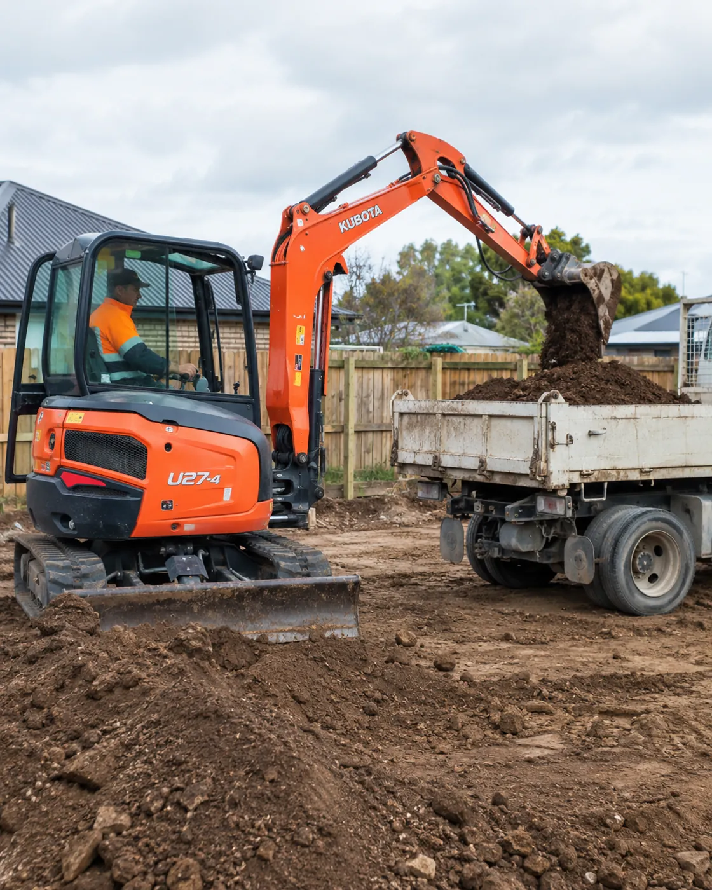
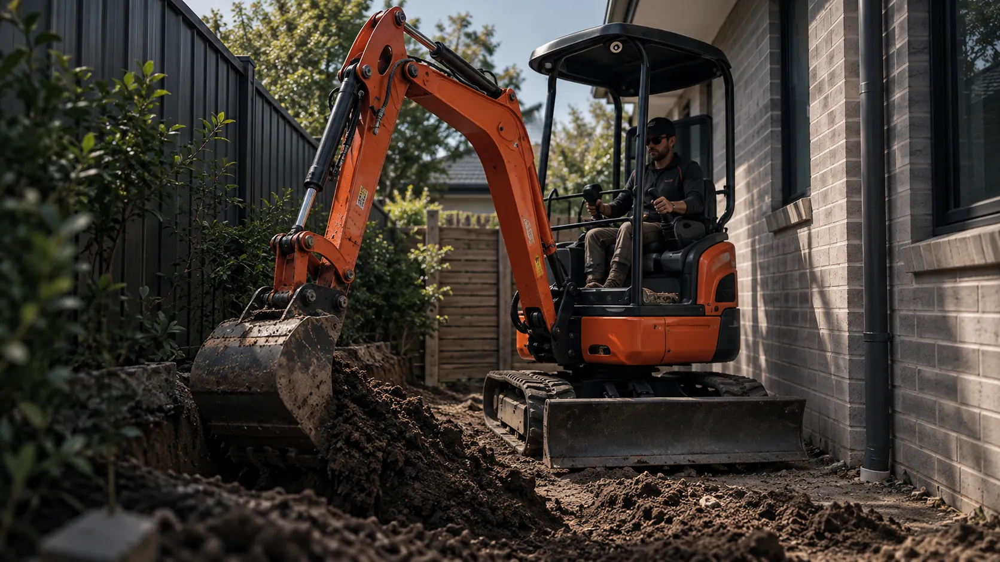

Earthmoving and levelling in Sydney
Soil movement, levelling and reshaping to suit required site levels.
Earthmoving
Site shaping, levelling and material movement to get the project on solid ground.
Earthmoving covers shifting, shaping and levelling soil so a site sits at the right heights for what comes next, whether that’s a slab, lawn, paving or a building pad.
We use compact machinery to move material accurately on residential and commercial sites, including areas that are hard to reach.
When you might need it
- A sloping yard needs levelling
- Soil needs moving or reshaping before landscaping or building
- You need levels set for a slab, lawn or paving
How it works
From enquiry to finished site.
Based in Dural and working across Sydney, including the Hills District, North West Sydney and the Hawkesbury.
- 01Free site visit
We look at the job
We come out to check access, levels and scope in person.
- 02Free quote
You get a clear price
A quote based on the real site, with no obligation.
- 03The work
Done and left ready
Completed carefully, with the site left ready for the next stage.
What is cut and fill?
It means digging soil from higher areas and placing it in lower areas to create a level or graded surface, often reducing the amount of soil that needs to be taken away.
Can you set the fall for drainage?
Yes. We can shape the ground so water runs away from buildings and towards drainage points.
Do you remove excess soil?
Yes. Excess material can be loaded and removed from site.
Related services
Often booked together.


Ready to get started?
Need earthmoving in Sydney?
Tell us about the job and we’ll arrange a free site visit and quote. No cost, no obligation.